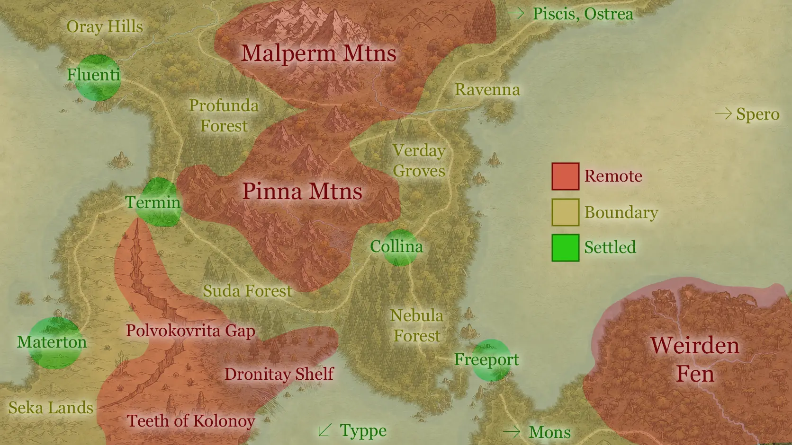

Purpose
Thirty-seven location references in the format of the Ironsworn Atlas: a few paragraphs of place, a Features list you can pull sensory detail from mid-scene, and a Quest Starter to hang a session or a chapter on. Each entry is a separate note so it can be linked from prose, bestiary entries, and character docs.
The three countries have entries of their own (Nysis, Mososi and Buralia) covering how each is governed, what pays for it, and what would break it. Regional holds the oracle table and the relations between them; city-scale material for Freeport lives in Freeport Gazetteer. Everything else here is the land between, and the places the roads only pass through.
The Countries
| Capital | Governed by | Held together by | |
|---|---|---|---|
| Nysis | none | five urbestroy, answerable to nobody | the Conclave’s annual payment for Ravenna, divided among them |
| Mososi | Typpe | a Directorate: the Direktor Roberto, through an unbribable inspectorate | food off Materton’s beds that no one can blockade |
| Buralia | Altiplano | a travelling Emperor and the governors he leaves behind | tribute, and an archive that forgets nothing |
The Three Grades
The region is graded not by who claims it on a map but by how reliably the settled world reaches it.
| Grade | Meaning |
|---|---|
| Settled | Walls, a watch, an urbestro or equivalent, and a road that is maintained. Law is enforceable. Someone will come looking for you. |
| Boundary | Worked land (timber, charcoal, grazing, foraging) but no standing authority. Travelled in daylight and in company. Law is what your party can enforce. |
| Remote | Blight, high mountain, or country the Unmaking left broken. Entered deliberately, by people with a reason. Nobody is coming. |
The grade is a statement about support, not danger. Freeport will kill you as readily as the Weirden Fen. The difference is that in Freeport there is a body to bury.
Settlement Scale
Lodestar’s Settlement: Type oracle is rolled against the grade above, and it tops out at Hold. Yrt’s named settlements run past it, so the larger sizes are not rolled: they are established places set on the map.
| Type | Population | Here |
|---|---|---|
| Town | 600–2,500 | Termin, Sveba, Vitre, Collima, Lokigi |
| City | 2,500–6,000 | Ostrea, Piscis, Fluenti, Materton, Mons |
| Capital | 6,000–10,000 | Typpe, Altiplano |
| Free port | ~15,900 | Freeport, which is its own case: bigger than everything and fed by ship |
The rolled tiers are Stead, Camp, Outpost, Hamlet, Village and Hold. Hold is 600–2,500, the same band as Town: the difference is that a Hold is rolled and a Town is named. Alneta and Intersang are Villages, and are the only named settlements small enough to sit on the rolled part of the table. Both are landings rather than towns, which is why they carry a wharf, a bonded store and a trade a place of that size has no other business supporting.
Oracle: YRT Location
Roll 1d100.
| d100 | Result | Type |
|---|---|---|
| 1–7 | Piscis | Settled |
| 8–14 | Ostrea | Settled |
| 15–21 | Collima | Settled |
| 22–28 | Freeport | Settled |
| 29–35 | Mons | Settled |
| 36–42 | Termin | Settled |
| 43–49 | Fluenti | Settled |
| 50–55 | Materton | Settled |
| 56–60 | Oray Hills | Boundary |
| 61–65 | Profunda Forest | Boundary |
| 66–70 | Verday Groves | Boundary |
| 71–75 | Nebula Forest | Boundary |
| 76–80 | Suda Forest | Boundary |
| 81–85 | Seka Lands | Boundary |
| 86–87 | Malperm Mtns | Remote |
| 88–89 | Pinna Mtns | Remote |
| 90–91 | Polvokovrita Gap | Remote |
| 92–93 | Dronitay Shelf | Remote |
| 94–95 | Teeth of Kolonoy | Remote |
| 96–97 | Weirden Fen | Remote |
| 98–99 | Ravenna | Remote |
| 100 | Spero | Remote |
Off-oracle entries
Ten places have Atlas entries but no slot on the roll, because you do not stumble into them: you go through a neighbour to get there. Roll the parent, then decide. The last three are water rather than ground, and a party is on them because it took a boat.
| Location | Type | Reached via |
|---|---|---|
| Typpe | Settled | The Falter Bay crossing, or the road west out of Seka Lands |
| Sveba | Settled | Boat from Materton or Fluenti |
| Vulkana Caldera | Remote | The high road above Mons |
| Vitre | Settled | The strip east of Termin, between the two customs posts |
| Lokigi | Settled | The Materton road south-west, or any barge on Falter Bay |
| Intersang | Boundary | The road down from Mons, or a Mososi barge across the Bay |
| Falter Sound | Boundary | Any hull out of Freeport, Piscis or Alneta |
| Falter Bay | Boundary | Freeport’s canal, or down from Typpe |
| Sea of Bees | Remote | Past Piscis, or out of Ostrea with the whalers |
| Beyond the Sea of Bees | Remote | A berth on a Biel, Ramage or Gelandian hull, and nobody local has the chart |
Progress
- Piscis
- Ostrea
- Collima
- Freeport
- Mons
- Termin
- Fluenti
- Materton
- Oray Hills
- Profunda Forest
- Verday Groves
- Nebula Forest
- Suda Forest
- Seka Lands
- Malperm Mtns
- Pinna Mtns
- Polvokovrita Gap
- Dronitay Shelf
- Teeth of Kolonoy
- Weirden Fen
- Ravenna
- Spero
- Typpe (off-oracle)
- Sveba (off-oracle)
- Vulkana Caldera (off-oracle)
- Vitre (off-oracle)
- Falter Sound (off-oracle, water)
- Falter Bay (off-oracle, water)
- Sea of Bees (off-oracle, water)
- Beyond the Sea of Bees (off-oracle: Biel, Ramage, Gelandia)
- Lokigi (off-oracle)
- Intersang (off-oracle)